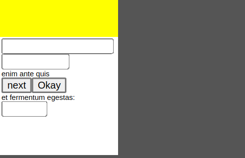

GUI-Recover trajectory

{
"event": "reset",
"goal": "Click on the \"Okay\" button.",
"target": "The \"Okay\" button",
"screenshot": "0000.png",
"sha256": "022351ac9e014600bfdd410d56e95d1e38a0d998c506274232f006fa0d0e905c"
}
{
"event": "first",
"executed_action": {
"action": "HOVER",
"value": null,
"position": [
0.21,
0.49
]
},
"executed_code": "mouse_move(104.58, 157.29)",
"reward": 0.0,
"terminated": false,
"truncated": false,
"task_info": {
"REWARD_GLOBAL": 0,
"RAW_REWARD_GLOBAL": 0,
"REWARD_REASON": null,
"DONE_GLOBAL": false,
"EPISODE_ID": 0,
"TASK_READY": true
},
"execution_error": "",
"screenshot": "0001.png",
"sha256": "022351ac9e014600bfdd410d56e95d1e38a0d998c506274232f006fa0d0e905c"
}{
"event": "verification",
"phase": "immediate",
"verdict": {
"status": "not_achieved",
"privileged_oracle": true
}
}{
"event": "repair_prediction",
"prediction": {
"raw": "[0.21, 0.49]",
"point": [
0.21,
0.49
]
}
}
{
"event": "retry_click",
"executed_action": {
"action": "CLICK",
"value": null,
"position": [
0.21,
0.49
]
},
"executed_code": "mouse_click(104.58, 157.29)",
"reward": 1.0,
"terminated": true,
"truncated": false,
"task_info": {
"REWARD_GLOBAL": 0.998286,
"RAW_REWARD_GLOBAL": 1,
"REWARD_REASON": null,
"DONE_GLOBAL": true,
"EPISODE_ID": 1,
"TASK_READY": true
},
"execution_error": "",
"screenshot": "0002.png",
"sha256": "022351ac9e014600bfdd410d56e95d1e38a0d998c506274232f006fa0d0e905c"
}{
"event": "episode_end",
"id": "click-button-12002-drop-click",
"scene_id": "click-button-12002",
"task": "click-button",
"seed": 12002,
"regime": "drop-click",
"strategy": "oracle",
"success": true,
"reason": "success",
"prefix_matched": true,
"waits": 0,
"repairs": 1,
"logical_actor_calls": 2,
"invalid_predictions": 0,
"source_prediction_reused": true,
"verifier_calls": 1,
"verifier_seconds": 1.6635283827781677e-05,
"triggered_recovery": true,
"reward": 1.0,
"terminated": true,
"truncated": false,
"task_info": {
"REWARD_GLOBAL": 0.998286,
"RAW_REWARD_GLOBAL": 1,
"REWARD_REASON": null,
"DONE_GLOBAL": true,
"EPISODE_ID": 1,
"TASK_READY": true
},
"environment_steps": 2,
"new_actor_generations": 0,
"elapsed_seconds": 3.470266403630376
}